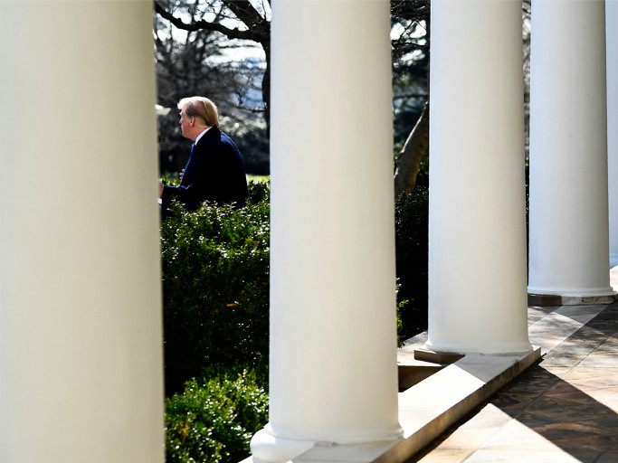
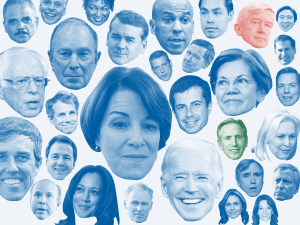

Politics
Sports
Science & Health
Economics
Culture
Politics Podcast:
Trump Plans to Declare a National Emergency

THE TRUMP ADMINISTRATION
Does Trump's National Emergency Set A Problematic Precedent For Conservatives?
By
Amelia Thomson-DeVeaux
Latest Politics
Feb. 15, 2019
How Bill Weld Could Shake Up The 2020 Republican Primary
By
Nathaniel Rakich
Filed under
2020 Election

Feb. 15, 2019
What The Potential 2020 Candidates Are Doing And Saying, Vol. 6
By
Adam Kelsey
Filed under
2020 Digest
Feb. 15, 2019
Independents Trust Mueller, Which Could Be Bad News For Trump
By
Nathaniel Rakich
Filed under
Pollapalooza